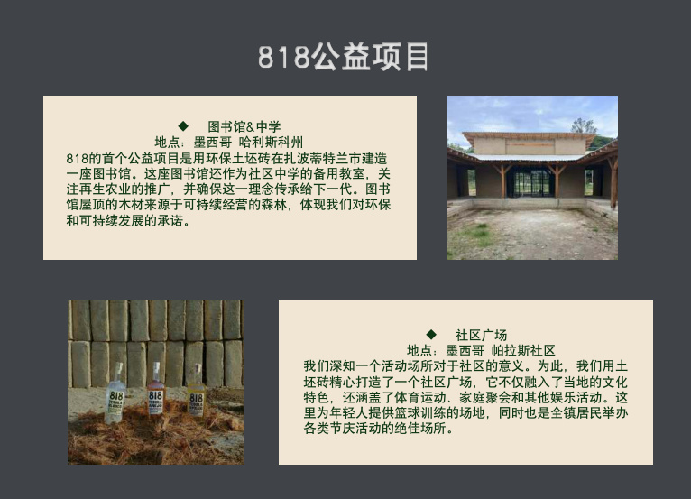

精选龙舌兰
从龙舌兰的种植与成熟开始，重视原料品质，也尊重每一位参与其中的种植者。

818 龙舌兰酒诞生于墨西哥哈利斯科州。品牌珍视从土地、原料到酿造的每一个环节，也希望与家人、朋友和社区分享值得珍藏的相聚时刻。
认识 818 ↗SCROLL TO DISCOVER ↓818 重视传统工艺与自然环境之间的平衡。从龙舌兰种植者的悉心照料，到酿造过程中的每一步，品牌希望让产品背后的劳动与故事都被看见。
了解一瓶获奖龙舌兰酒背后的制作工艺和辛勤努力。
从龙舌兰的种植与成熟开始，重视原料品质，也尊重每一位参与其中的种植者。
采用传统砖窑烹煮龙舌兰，并经过发酵，让原料逐渐发展出丰富风味。

通过蒸馏提取酒液风味，呈现 818 龙舌兰酒细腻、顺滑的口感特色。

从龙舌兰种植到酒瓶包装，818 将可持续理念融入供应链，并与当地社区及环保组织合作，努力减少生产活动对环境的影响。

酿酒厂采用生物质能和太阳能，以降低对化石燃料的依赖、减少碳足迹。品牌亦与 S.A.C.R.E.D. 合作，将生产过程中产生的龙舌兰副产品转化为环保砖，供周边社区使用。

品牌选择倡导能源转型、使用清洁能源的玻璃供应商；酒瓶标签、软木塞与外箱均采用 FSC 认证材料，持续推动更负责任的包装选择。
根据宣传册内容，818 承诺将每售出一瓶龙舌兰酒的销售额 1% 捐赠给环保非营利组织。品牌也是「1% for the Planet」成员，希望与更多伙伴共同应对环境挑战。
818 的公益行动不仅关注环境，也关注当地居民的教育、公共空间与社区生活。

818 的首个公益项目，是在墨西哥哈利斯科州扎波蒂特兰市以环保土坯砖建造图书馆。图书馆同时作为社区中学的备用教室，并关注再生农业理念的推广与传承。

818 使用土坯砖打造社区广场，为体育运动、家庭聚会和节庆活动提供场地，也为当地年轻人提供篮球训练空间，让公共空间成为社区交流的纽带。
818 及品牌创始人肯达尔·詹娜支持 LGBTQ+ 群体权益，并关注可持续发展项目。品牌希望通过合作与捐助，为 LGBTQ+ 社群、地球环境及人类福祉贡献力量。